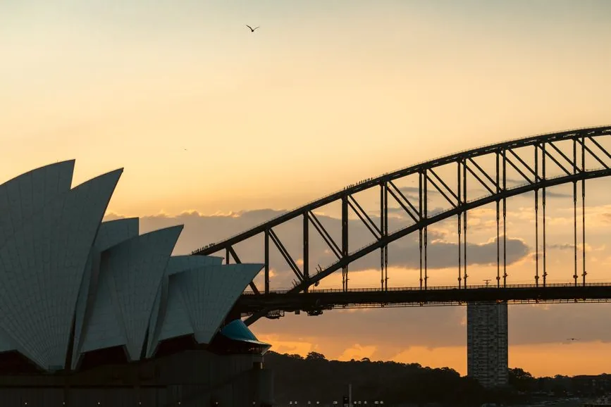

No one pays to be recommended here, and we say when a free or cheaper option wins. Our promise →
In this guide11 sections
- The short answer
- 31 December 2026: the timetable and the tickets
- Circular Quay and The Rocks: the view from your room
- Darling Harbour and Barangaroo: fireworks of their own
- The city centre: a lawn on the harbour, and a walk home
- North Sydney and Milsons Point: the view back
- Which rooms see the fireworks, and the 2026 packages
- How to book New Year’s Eve in Sydney
- All 12 at a glance
- Getting there and around
- Frequently asked questions

Sydney’s New Year’s Eve fireworks go off twice over the harbour, at 9pm and at midnight, and the City of Sydney, which runs the night, says it draws more than one million people to the harbour and the areas around it. Hotels with harbour views sell those rooms as their own room types, and some sell New Year’s Eve only with a minimum stay: YHA Sydney Harbour, for one, takes New Year’s Eve bookings for seven nights or more.
This guide covers the timetable for 31 December 2026, the vantage points and their ticket dates, four areas matched to what you can see or walk to from each, twelve hotels, and the rules that catch people out, from minimum stays to the station that closes for the afternoon. The hotels are researched picks, chosen for location, what each property publishes and consistent guest feedback, and each was checked as operating at the start of October 2026. One is first-hand: one of us stayed at the Sheraton Grand Sydney Hyde Park in September 2026. No hotel pays to appear here.
The short answer
| If you want… | Stay in | What you get |
|---|---|---|
| the fireworks from your room | Circular Quay and The Rocks | Harbour rooms facing the Bridge or the Opera House, and free vantage points outside |
| fireworks at the door, on a family night | Darling Harbour and Barangaroo | Darling Harbour’s own fireworks at 9pm and midnight, and Barangaroo Reserve |
| a lawn on the harbour, and a walk home | The city centre | The Royal Botanic Garden’s four free vantage points |
| the view back across the water | North Sydney and Milsons Point | Bradfield Park and Lavender Bay, facing the Bridge |
Not sure which area? Rank these areas for your trip: pick what matters and see the reasons.

31 December 2026: the timetable and the tickets
The City of Sydney’s running order for the night:
| Time | What happens |
|---|---|
| 7.30pm | Smoking ceremony on the ships Tribal Warrior, Mari Nawi and Wirawi |
| 8.30pm | Projections on the Harbour Bridge pylons, and lighting effects |
| 8.45pm | Welcome to Country |
| 9pm | Calling Country fireworks, curated by We Are Warriors, suited to young children |
| 9.15pm | Harbour lights: boats decked in lights cross the harbour |
| Midnight | The fireworks, launched from the Harbour Bridge, the Opera House and other landmarks |

The City lists 48 vantage points around the harbour. Most are free and first come, first served; some need a free ticket, and some are paid events. Here are the ones closest to the hotels below, as listed at the start of October 2026:
| Vantage point | Where | Entry | Alcohol |
|---|---|---|---|
| Hickson Road Reserve | The Rocks, at the foot of the Bridge | Free | Prohibited |
| Campbells Cove | The Rocks, north of the cruise terminal | Free | Prohibited |
| Dawes Point (Tar-Ra) Park | Under the Bridge, on the south side | Free | Prohibited |
| Sydney Opera House Forecourt | Bennelong Point | Free ticket, from 10am on 26 December | For sale, no BYO |
| Bennelong Lawn, Tarpeian Lawn, Fleet Steps, Mrs Macquaries Point | Royal Botanic Garden | Free | For sale, no BYO |
| Barangaroo Reserve | Barangaroo, facing the western side of the Bridge | Free | For sale, no BYO |
| Darling Harbour | Cockle Bay, with its own fireworks at 9pm and midnight | Free | Prohibited |
| Upper Bradfield Park, Mary Booth Reserve | Milsons Point | Free | Prohibited |
| Lower Bradfield Park | Milsons Point | Paid ticket, from 9am on 7 October | Prohibited |
| Blues Point | McMahons Point | Paid ticket, “available soon” when we checked | Prohibited |
Other paid sites were already sold out by early October: Clark Island, Goat Island and Shark Island, as were the free tickets for Bradleys Head and Strickland Estate. Free places on the Cahill Expressway, above Circular Quay, are allocated by ballot to New South Wales residents. Taronga Zoo sells its own evening, from A$125 to A$1,000.

Three rules from the City’s guide matter most. Most free vantage points are alcohol-free zones in 2026. Most don’t let you back in once you leave, so plan to stay until after midnight. And Circular Quay Station closes from 3pm to midnight: for the Circular Quay vantage points the City suggests Wynyard, Martin Place or St James stations, and Victoria Cross for North Sydney. Full transport details for 2026 are due in November.
Circular Quay and The Rocks: the view from your room

Circular Quay sits between the Bridge and the Opera House, with The Rocks rising behind it to the west. Hickson Road Reserve, Campbells Cove and Dawes Point are all here, and the City advises arriving early to get a spot at them. With the station closed for the afternoon and evening, you either walk in from Wynyard or St James, or you are already here. Hotels here sell the fireworks as a room type, with names such as “Sydney Harbour” or “full harbour”. Book the view, not just the hotel.
Where to stay at Circular Quay and in The Rocks
How the hotel links work: a hotel’s name goes to its own website. “Check rates” opens it on Booking.com through our partner Stay22, which pays us a commission if you book, at no extra cost to you.
- Shangri-La Sydney, splurge. 565 rooms and suites over 36 levels at 176 Cumberland Street, above The Rocks, with harbour room types that look at the Bridge and the Opera House, and a restaurant and bar on level 36. Its own New Year’s Eve offer was listed from USD 1,738 a night, on average, when we checked on 5 October 2026, and its terms say a minimum length of stay applies. Choose it for the view from high up. Watch out: not every room faces the harbour, so book a harbour room type. Check rates on Booking.com →
- Four Seasons Hotel Sydney, splurge. 34 storeys and 531 rooms at 199 George Street, where The Rocks meets Circular Quay; its full-harbour rooms look at the Bridge and the Opera House. Choose it for the Quay at the door. Watch out: “partial harbour” rooms are a different category from “full harbour” ones, so check which you are booking. Check rates on Booking.com →
- Park Hyatt Sydney, splurge. On the water in The Rocks, directly across the cove from the Opera House, with harbour-facing rooms that look straight at it. Choose it to sleep on the water itself. Watch out: it is one of the city’s most expensive hotels. Check rates on Booking.com →
- Pullman Quay Grand Sydney Harbour, comfortable, apartment-style. One- and two-bedroom suites at 61 Macquarie Street, East Circular Quay, a few steps from the Opera House, with balconies over the Quay or the Botanic Garden. Choose it for space, a kitchen and a balcony. Watch out: ask for the Quay side if the Bridge is the point. Check rates on Booking.com →
- YHA Sydney Harbour, budget. A hostel built above the excavated remains of the old Rocks neighbourhood, with a rooftop that looks at the Opera House and the Bridge. For New Year’s Eve 2026 every booking needs at least seven nights, and from 4pm on 31 December to 7am on 1 January the rooftop is open only to guests on its New Year’s Eve package, adults only. Choose it for the harbour at a hostel price, if a week suits you. Watch out: without the package, you watch from somewhere else. Check rates on Booking.com →
Darling Harbour and Barangaroo: fireworks of their own

Darling Harbour is one of the City’s free vantage points, set up for families, with its own fireworks at 9pm and midnight over Cockle Bay; alcohol is prohibited there. Barangaroo Reserve, a walk to the north, faces the western side of the Bridge, with alcohol for sale but no BYO. Town Hall station and the Metro at Barangaroo are close by, and the hotels here are big, which helps when the Quay is full.
Where to stay at Darling Harbour and Barangaroo
- Sofitel Sydney Darling Harbour, comfortable. 590 rooms and suites at 12 Darling Drive, a minute’s walk from Darling Harbour, sold by view: harbour, city or bay. Choose it for the Darling Harbour fireworks outside the window. Watch out: the view is in the room type, so book “harbour view” for the fireworks. Check rates on Booking.com →
- Hyatt Regency Sydney, comfortable. 892 rooms at 161 Sussex Street, on the eastern edge of Darling Harbour; it reopened as a Hyatt Regency on 1 December 2016. Choose it for choice when smaller hotels are full. Watch out: book a harbour-view room type if you want the fireworks from the room. Check rates on Booking.com →
- W Sydney, comfortable, playful. Opened on 12 October 2023 at 31 Wheat Road above Darling Harbour, with 588 rooms and suites and a rooftop pool. Choose it for a lively base on the water. Watch out: Darling Harbour itself is a public vantage point on the night, so expect crowds at the door. Check rates on Booking.com →
- Crown Towers Sydney, splurge. 349 rooms high in the tower at Barangaroo, open since December 2020, with floor-to-ceiling windows; Barangaroo Reserve is a walk away. Choose it for height and harbour views on the western side. Watch out: ask what your room faces. Check rates on Booking.com →
The city centre: a lawn on the harbour, and a walk home

The Royal Botanic Garden holds four of the free vantage points: Bennelong Lawn, above the Opera House; Tarpeian Lawn; Fleet Steps; and Mrs Macquaries Point. All four sell alcohol, and none lets you bring your own. From Hyde Park and St James station the garden is a walk away, and from Town Hall so is Darling Harbour. You will not see the fireworks from your room, but after midnight you can walk back rather than wait for a train.
Where to stay in the city centre
- Sheraton Grand Sydney Hyde Park: where one of us stayed in September 2026. It faces Hyde Park at 161 Elizabeth Street, with St James and Museum stations a couple of minutes away, 558 rooms, and a rooftop health club with an indoor heated pool. Choose it for a calm base to walk back to after midnight. Watch out: this is a base for walking to the fireworks, not for watching them from your room. Check rates on Booking.com →
- Kimpton Margot Sydney, comfortable, heritage. 172 rooms in the heritage-listed 1939 former head office of Sydney Water on Pitt Street, near Town Hall, open since February 2022. Choose it for character in the middle of the city, with Darling Harbour’s fireworks a walk west. Watch out: it is a walk to the water. Check rates on Booking.com →
- Great Southern Hotel Sydney, good value. A heritage-listed hotel dating from 1854 at 717 George Street, a few minutes from Central Station. Choose it for a lower price within walking distance of Darling Harbour. Watch out: it is being upgraded, with noisy works from 10am to 4pm until 31 January 2027, and no on-site parking until about the end of January. Check rates on Booking.com →
North Sydney and Milsons Point: the view back

Across the water, the north shore looks back at the Bridge and the Opera House together. At Milsons Point, Upper Bradfield Park and Mary Booth Reserve are free, and Lower Bradfield Park is ticketed, with tickets from 9am on 7 October. Lavender Bay Parklands are free and face the western side of the Bridge; Blues Point is a paid party site, and Luna Park holds its own ticketed party. On the night, the City points north-shore crowds to Victoria Cross station on the Metro.
We have not named a hotel here yet. The listings we found for the north shore disagreed on names and addresses, and we name only hotels we can check. If you stay here, choose by the walk to Milsons Point or Lavender Bay.
Which rooms see the fireworks, and the 2026 packages
A harbour hotel does not mean a fireworks room. Several hotels say in their own terms which room categories see the Bridge, the Opera House or neither, and most sell New Year’s Eve only as a package: prepaid, non-refundable and with a minimum stay. This is what each hotel’s own website said on 1 November 2026. Where a hotel published no price, we give none.
| Hotel | What the hotel says about the view | New Year’s Eve 2026 package |
|---|---|---|
| Four Seasons Hotel Sydney | Only these categories see the fireworks: Deluxe Full Harbour Room, Premier Full Harbour Club Room, Full Harbour Club Suite, One Bedroom Full Harbour Suite and the Presidential Suites | 3 to 14 nights including 31 December, for stays from 15 December 2026 to 10 January 2027; breakfast for two daily; City Room stays add two tickets to the Grain Bar after-party. Full prepayment, non-refundable |
| Shangri-La Sydney | Barangaroo rooms see neither the Bridge nor the Opera House; Opera City View rooms see the Opera House but not the Bridge; Harbour Bridge rooms and suites look over Circular Quay to the Bridge. Room allocation cannot be guaranteed | A New Year’s Eve 2026 room offer: a minimum stay applies (the length is not stated), full prepayment, non-refundable and non-transferable |
| YHA Sydney Harbour | Opera Harbour View rooms have partial city and harbour views | 7 nights minimum, with the rooftop New Year’s Eve event (6.30pm to 12.30am, 18 and over) and daily continental breakfast. Prepaid, non-refundable; after 4pm on 31 December the rooftop is for package guests only |
| W Sydney | The hotel describes Darling Harbour or city views, not the Bridge or the Opera House | 2 nights minimum including 31 December, A$200 to spend at the 29/30 rooftop bar and breakfast for two. Prepaid, non-refundable |
| Crown Towers Sydney | Its Harbour Bridge rooms and suite list Sydney Harbour Bridge views; its Opera rooms list the Opera House | No New Year’s Eve room package on its own site; the brand’s New Year page lists restaurant events |
| Pullman Quay Grand Sydney Harbour | Harbour-view suites look over Circular Quay to the Harbour Bridge | No New Year’s Eve page on its own site |
| Sofitel Sydney Darling Harbour | Darling Harbour views | No room package; New Year’s Eve dining only |
| Park Hyatt Sydney, Hyatt Regency Sydney | Hyatt’s website would not load for our check. Ask the hotel which room categories see the fireworks before you pay | |
 Partner link · Welcome PickupsArrange a private airport pickup (Welcome Pickups)
Partner link · Welcome PickupsArrange a private airport pickup (Welcome Pickups)
Read nextWhere to Book a Sydney Harbour CruiseTwo things follow from the small print. Book the room category, not the hotel: at the Four Seasons a City Room comes with an after-party but no fireworks view, and at the Shangri-La a Barangaroo room faces the other way. And because these packages are non-refundable, travel insurance that covers a cancelled trip matters more than usual for this one night.
How to book New Year’s Eve in Sydney
- Check the minimum stay first. YHA Sydney Harbour takes New Year’s Eve bookings for seven nights or more, and Shangri-La Sydney’s New Year’s Eve offer says a minimum length of stay applies. Find the minimum before you fall for a view.
- Book the view, not the hotel. Harbour hotels sell the fireworks as a room type. Read the room name, and the side of the building it faces.
- Read the cancellation terms before you pay; a New Year’s Eve package may carry different terms from the hotel’s ordinary rates.
- Have a plan B for the fireworks. If the room with the view is gone, stay in the city and walk to the Botanic Garden, or stay at Darling Harbour, which has its own fireworks.
- On the water. Harbour cruises sell places for the night; see where to book a Sydney harbour cruise. Unauthorised boats are kept out of an exclusion zone on the harbour from 8pm to 12:45am. Cockatoo Island, in the harbour, is open on the night only to guests booked to stay there, in its houses, apartments and campground; on 26 October 2026 the City listed its New Year’s Eve accommodation as sold out.
- Compare totals. Our hotel booking sites compared goes through where to book, and where to stay in Sydney has more hotels for the rest of your trip.
 Partner link · WeGoTripBrowse self-guided audio tours on WeGoTrip
Partner link · WeGoTripBrowse self-guided audio tours on WeGoTrip Read nextYour First Visit to Sydney
Read nextYour First Visit to SydneyAll 12 at a glance
| Hotel | Area | Tier | Best for | Watch out for | Rates |
|---|---|---|---|---|---|
| Shangri-La Sydney | The Rocks | Splurge | Bridge and Opera House from high up | A minimum stay on its NYE offer | Check rates → |
| Four Seasons Hotel Sydney | Circular Quay | Splurge | The Quay at the door | Partial vs full harbour rooms | Check rates → |
| Park Hyatt Sydney | The Rocks | Splurge | Sleeping on the water | Price | Check rates → |
| Pullman Quay Grand Sydney Harbour | East Circular Quay | Comfortable | A balcony and a kitchen by the Opera House | Ask for the Quay side | Check rates → |
| YHA Sydney Harbour | The Rocks | Budget | A harbour rooftop at a hostel price | Seven-night minimum for NYE | Check rates → |
| Sofitel Sydney Darling Harbour | Darling Harbour | Comfortable | Darling Harbour’s fireworks from the room | Book “harbour view” | Check rates → |
| Hyatt Regency Sydney | Darling Harbour | Comfortable | Choice when the Quay is full | Book a harbour-view room | Check rates → |
| W Sydney | Darling Harbour | Comfortable | A lively base on the water | Crowds at the door | Check rates → |
| Crown Towers Sydney | Barangaroo | Splurge | Height over the western harbour | Ask what your room faces | Check rates → |
| Sheraton Grand Sydney Hyde Park | City centre | Comfortable | A calm base to walk back to | A walk to the water | Check rates → |
| Kimpton Margot Sydney | City centre | Comfortable | Character near Town Hall | A walk to the water | Check rates → |
| Great Southern Hotel Sydney | Haymarket | Good value | A lower price near Central | Daytime works to 31 Jan 2027 | Check rates → |

Getting there and around
- From the airport, the train to the city takes around 20 minutes, according to the City of Sydney.
- Pay as you go: tap on and off with an Opal card, or with a contactless card, phone or watch.
- Leave the car: with road closures and parking limits around the harbour, the City says driving to vantage points isn’t possible.
- Before you fly, sort out mobile data (the best eSIM for Australia), and see things to do in Sydney and getting around Sydney.
Frequently asked questions
What time are the Sydney New Year's Eve fireworks in 2026?
There are two shows: the Calling Country fireworks at 9pm, suited to families with young children, and the midnight fireworks, launched from the Harbour Bridge, the Opera House and other landmarks. The City of Sydney's programme starts with a smoking ceremony at 7.30pm.
Where is the best place to stay in Sydney for New Year's Eve?
Circular Quay and The Rocks, if you want the fireworks from your room: harbour room types at hotels such as the Shangri-La, Four Seasons and Park Hyatt face the Bridge or the Opera House. Darling Harbour has its own fireworks at 9pm and midnight, and the city centre is a walk from the Royal Botanic Garden's free vantage points.
Do Sydney hotels have minimum stays over New Year's Eve?
Some do. YHA Sydney Harbour takes New Year's Eve 2026 bookings only for seven nights or more, and Shangri-La Sydney's New Year's Eve offer says a minimum length of stay applies. Check the minimum and the cancellation terms before you book.
Do you need tickets to watch the Sydney fireworks?
Not for most places. Many of the 48 vantage points the City of Sydney lists are free and first come, first served. Some need a free ticket, such as the Opera House Forecourt, from 10am on 26 December, and some are paid, such as Lower Bradfield Park, from 9am on 7 October.
Is Circular Quay Station open on New Year's Eve?
No: it closes from 3pm to midnight. The City suggests Wynyard, Martin Place or St James stations for the Circular Quay vantage points, and Victoria Cross for North Sydney. Full transport details for 2026 are due in November.
Can you drink alcohol at the Sydney fireworks vantage points?
At most free vantage points, no: the City says most are alcohol-free zones in 2026. Some sell alcohol but don't let you bring your own, such as the Royal Botanic Garden's lawns and Barangaroo Reserve, and a few free parks in Balmain, Birchgrove and Pyrmont allow BYO.
Sources & further reading
- City of Sydney: Sydney New Year’s Eve, the running order for 2026
- City of Sydney: fireworks viewing guide (alcohol, re-entry, Circular Quay Station)
- City of Sydney: vantage points map and ticketed vantage points
- City of Sydney: visiting Sydney for New Year’s Eve, public transport and boating
- YHA: New Year’s Eve 2026 at YHA Sydney Harbour
- Shangri-La Sydney: New Year’s Eve 2026 offer
- Shangri-La Sydney: hotel overview
- Four Seasons Hotel Sydney: deluxe full harbour room
- Accor: Sofitel Sydney Darling Harbour
- Hyatt Newsroom: Hyatt Regency brand returns to Sydney (December 2016)
- Great Southern Hotel Sydney: works and parking notices
- Official websites of each hotel named above, checked in October 2026
Ticket dates, prices and hotel terms change. Every detail here was checked at the start of October 2026; confirm minimum stays, rates and cancellation terms with the hotel before booking. One of us stayed at the Sheraton Grand Sydney Hyde Park in September 2026, and it was not a hosted stay; the other hotels are researched picks. This article contains affiliate links: hotel rates on Booking.com and other booking sites through Stay22, and tours, transfers and eSIMs through our partners; if you book through them we may earn a commission at no extra cost to you. No hotel pays to be included.
Keep reading on Gently Yonder
 Where to Stay in SydneySix areas and 13 hotels, including the Sheraton Grand on Hyde Park, where we stayed.
Where to Book a Sydney Harbour CruiseKlook, Viator or GetYourGuide — the answer changes by cruise type, with a verdict table for whale, dinner and sunset.
Your First Visit to SydneyA calm orientation to the harbour, the neighbourhoods, and a first-timer's rhythm that doesn't exhaust you.
Where to Stay in SydneySix areas and 13 hotels, including the Sheraton Grand on Hyde Park, where we stayed.
Where to Book a Sydney Harbour CruiseKlook, Viator or GetYourGuide — the answer changes by cruise type, with a verdict table for whale, dinner and sunset.
Your First Visit to SydneyA calm orientation to the harbour, the neighbourhoods, and a first-timer's rhythm that doesn't exhaust you.
 Getting Around SydneyThe Opal card and contactless fares, trains as the backbone, the harbour ferries, and the honest airport options.
Getting Around SydneyThe Opal card and contactless fares, trains as the backbone, the harbour ferries, and the honest airport options.
 Best eSIM for Australia (2026)How to choose an Australia travel eSIM — coverage beyond the cities, data sizing, and the honest pick for a short trip.
Best eSIM for Australia (2026)How to choose an Australia travel eSIM — coverage beyond the cities, data sizing, and the honest pick for a short trip.
 Hotel Booking Sites ComparedHotels.com, Booking.com, Trip.com, Agoda — what each is genuinely good for.
Hotel Booking Sites ComparedHotels.com, Booking.com, Trip.com, Agoda — what each is genuinely good for.